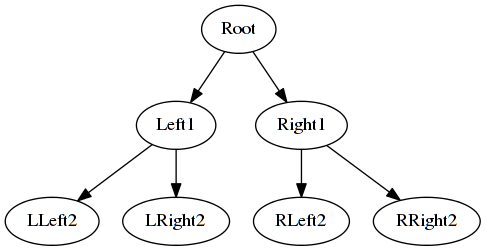
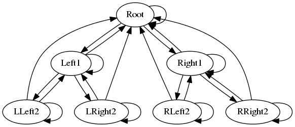

Цели работы
Планируется реализовать одну из известных моделей сборщиков мусора в проекте LLST. В проекте уже имеется реализации системы сборки мусора. Таким образом необходимый результат - реализовать более эффективную модель для некоторого набора случаев. Эффективность реализации будет измеряться конкретным (описанным ниже) набором метрик при исполнении конкретного набора тестов. При этом допустим случай что не все метрики покажут хороший результат. В таком случае необходимо проанализировать применимость модели сборщика в различных общих случаях работы программ.
О проекте
За основу научной работы был взят проект LLST выполняемый группой из 2х человек. Цель проекта: создание интерпретатора для языка Little Smalltalk (диалект Smalltalk). На данный момент интерпретатор совместим на уровне языка и уровне сгенированного байткода с описанием языка от его разработчика Timothy Budd. Возможности языка расширяются за счёт дополнения стандартной библиотеки и добавления новых примитивов (команд в байткоде), но при этом не ломается обратная совместимость. В плане синтаксиса Smalltalk-подобные языки очень просты (как например Lisp) и не нуждаются в дополнении.
Smalltalk специфичен тем, что вся разработка на нём ведётся в запущеной виртуальной машине. Чаще всего она представлена GUI, но есть и GNU-Smalltalk который работает в консоли. Накопленный результат работы можно сохранять в файловой системе в виде образов (image), которые в дальнейшем можно загружать. Все системы Smalltalk предоставляются программисту вместе со стартовым образом. Его можно считать стандартной библиотекой языка.
В проекте имеется виртуальная машина, которая представляет из себя интерпретатор и имеет консольный интерфейс в виде repl цикла (чтение команды, выполнения, вывода результата). Также есть компилятор начального образа. Описание начального образа пишется на языке Smalltalk, но имеет дополнительные лексемы. Начальный образ компилируется в байткод - который подаётся интерпретатору. Без начального образа нельзя запустить интурпретатор.
Разработка ведётся на языке C++. Также значительную долю кода занимает начальный образ на Little Smalltalk. Виртуальную машину сейчас можно (крос)скомпилировать под разные архитектура (x86, amd64, arm) и под разные ОС (Linux, Windows). В основном результат будет тестироваться Linux, x86.
Важной частью проекта является интеграция LLVM для реализации JIT-компилирования. Эта часть является отличительной по отношению к другим интерпретаторам языка Smalltalk.
участие в проекте
Мною были сделаны некоторые изменения в коде интерпретатора. Большая часть из них это добавленные в текущие реализации сборщиков мусора методы по выводу текщуего состояния сборщика. По завершению работы системы выводится общая собранная информация.
Начальный образ написанный на Smalltalk был скопирован и переписан, чтобы добавить тесты отсносящиеся к сборщику мусора, также удалены тесты проверящие общую корректность интерпретатора.
Возможно также внести дополнительные примитивы, чтобы изнутри интерпретатора получать информацию о сборщике.
На данный момент моя работа никак не внесена в репозитории разработчиков проекта, так как не достигнуты конечные результаты.
Используемые инструменты
Данный документ описан в формате asciidoc и транслируется в html при помощи утилиты asciidoctor.
Для генерации отчета о тестах (в виде таблиц и графиков) используется скрипт написанный на python3 с использованием библиотеки svgwrite.
Информация о состоянии сборщика мусора регулярно записывается в файл (gc.log по умолчанию), формат которого имитирует формат OpenJDK. Что позволяет воспользоваться инфраструктурой java для анализа работы сборщика - имеется множество утилит для обработки данных лога сборщика. В частности была выбрана утилита gcviewer - она может построить график по работе и предоставить сводные данные по накопленому логу.
Также в процессе разработки используются g++, clang, gdb, valgrind, KDevelop, CLion, cmake (неважная информация. возможно и весь пункт не важен)
Описание управления памятью
Язык Smalltalk предполагает автоматическое упраление памятью. То есть виртуальную машину можно разделить на две части: та часть которая исполняет пользовательскую программу, за счёт выполнения команд изменяющих состояние (mutator) и часть осуществляющая выделение памяти при необходимости и при её завершении осуществляющая поиск и сборку не нужной памяти - сборщик (collector).
Задачи которые должен выполнять сборщик мусора:
-
Для нового объекта обязательно выделиться память (т.к. сборщик мусора - частный случай менеджера памяти)
-
В случае нехватки памяти все недостижимые объекты будут удалены
Гарантии сборщика мусора:
-
Ни один достижимый объект не будет удалён.
Для оценки производительности сборщика мусора были выбраны следующие параметры:
-
Общее время затраченное на выполнение теста (секунды) - включает в себя запуск и завершение работы виртуальной машины. Параметр зависит многих компонентов виртуальной машины и в том числе от сборщика мусора. По данному параметру можно судить об эффективности организации данных в памяти (локальность) при условии эффективных сборок (параметр ниже).
-
Общее время из gc.log - эта характеристика не исопльзуется в отчете, но есть в логе включает в себя время от запуска виртуальной машины до последней сборки.
-
Время потраченное на сборку (секунды) - параметр зависящий от кол-ва сборок и среднего времени. Один из основных параметров которые необходимо минимизировать.
-
количество сборок
-
количество аллокаций до сборки - среднее кол-во запросов на выделение памяти между сборками. Зависит от кол-ва сборок. Напрямую нам не интересен.
-
высвобождение памяти в минут
-
средняя длительность паузы
-
средний размер кучи - сама по себе не очень полезная величина. Вычисляется через численное интегрирование размера кучи по времени, затем полученная величина передаётся виртуальной машиной при завершении работы, затем мы делим на время работы и получаем среднее значение. Интересно отношение размера кучи и неиспользуемого пространства кучи.
-
средний размер свободной памяти - вычисляется также как и средний размер кучи, но чаще (во время аллокации, а не во время увеличения размера).
-
процент эффективно занятой памяти - получаем из предыдущих двух парамметров
Заранее реализованые сборщики мусора
В проекте имеются написанные и протестированные сборщики.
Копирующий сборщик мусора
Классический копирующий сборщик мусора. Выделяет память как минимум в 2 раза большую чем необходимо и делит её на две кучи активную и пассивную. Когда память заканчивается (не хватает памяти для аллокации объекта) происходит сборка:
-
Начинается поиск всех достижимых объектов
-
Достижимые объекты копируются в пассивную кучу
-
Указатели пассивной и активной кучи обмениваются
Отдельно обрабатывается случай при котором после сборки всё равно не хватает места для аллокации объекта: начинается расширение кучи. Происходит выделение новой памяти (в полтора раза больше текущей). Происходит копирование в новую кучу. Память выделяется через realloc что может помочь в эффективности операции.
Известные проблемы сборщика:
-
Невозможно выделить большое количество памяти. Конкретнее: размер кучи может быть увеличен в полтора раза но не более.
-
Сборщик не уменьшает размер кучи (впрочем это редкая ситуация когда её необходимо уменьшать за исключением объектов-ресурсов, которые обычно выделяются и хранятся отдельно от общей кучи).
Копирующий сборщик (LLVM)
Наследуется от предыдущего. Всё аналогично предыдущему, но переопределён один метод, отвечающий за копирование объектов. Это может негативно сказаться на производительности, так как навешивается дополнительная логика. Но в тоже время jit-компиляция должна существенно ускорить работу программ.
Для проверки сборщиков мусора будут использованы тесты.
Дефектные сборщики мусора
Также для тестов имеется несобирающий менеджер памяти - он только выделяет память в случае нехватки. Одна из особенностей данного сборщика - он совсем не беспокоится о локальности данных. То есть фактически куча не увеличивается (через realloc и дальнейшее копирование в случае неуспеха), а просто создаётся новая с фиксированным размером.
Тесты
Тесты описаны в отдельном начальном образе. По своему предназначению их можно разделить на:
-
Проверяющие корректность (GCCorrectnessTest)
-
Проверяющие выполнение под нагрузкой (GCStressTest)
Вторые являются подмножеством первых. Однако, если интерпретатор не справляется с первыми, то можно утверждать, что он не корректен (не выполняет заданные гарантии) и нуждается в исправлении. Это и есть цель тестов на корректность.
Если интерпретатор успешно справляется с первыми тестами, но не выполняет вторых, то здесь тоже уместно говорить о некорректности. При непрохождении тестов следует разобраться с причиной и по-возможности устранить найденые ошибки. Однако может оказаться, что сборщик неэффективно использует выделенный ему ресурс (оперативная память) и при достижении определенного порога считает невозможным продолжать работу. Такие ограничения для сборщиков допустимы.
Так как нагрузочные тесты предполагают работу с большим объёмом ресурсов, то потребуется продолжительное время (которое можно зафиксировать). У разных реализаций сборщика потребуется разное время, для работы с памятью (могут выделяться лишние объёмы памяти, либо неэффективный обход графа ссылок). Меньшие затраты времени и памяти будут говорить о большей эффективности реализации. Поэтому нагрузочные тесты преследуют следующие цели:
-
Проверить корректность (нельзя утверждать наверняка, но могут помочь при нахождении ошибок)
-
Найти ограничения сборщика (ситуации при которых сборщик соблюдает набор заданых гарантий, но не проходит тест)
-
Сравнить эффективность реализации сборщика.
Примером ограничений можно привести необходимость копирующего сборщика наличия памяти в 2 раза большей, чем память занимаемая реальными объектами. Подобное требование можно встретить во многих алгоритмах сборки. При этом требование описано из теоретических соображений. В действительности нам скорее всего потребуется ещё больший объём памяти, чтобы операционная система могла совершать манипуляции связаные с выделением памяти программе.
При реализации тестов возникнут следующие проблемы: во-первых к объектам, ссылка на которые утрачена нельзя обратиться из интерпритируемой программы (мутатора), во-вторых нельзя напрямую обратиться к сборщику мусору. Вторая проблема частично решена, т.к. можно вызвать System collectGarbage, который заставит сборщик выполнить сборку немедленно. Других методов для управления сборщиком не реализовано. Из-за этих проблем кажется более простым решением - создать тесты внутри компилятора. Но в таком случае перед нами встают другие проблемы: необходимо изнутри компилятора запустить строки (или зарнее заготовленную программу) на исполнение, дождаться завершения запустить сборщик и проверить его состояние. Проверка интерпретатора исходным кодом также проверяет и общую его работоспособность, хотя и затрудняет поиск ошибок.
Тесты на корректность
-
Заполняем список значениями, вызываем сборщик мусора. Проверяем значения.
-
(LargeAlloc) создаём один огромный объект.
Стресс-тесты
Первые два теста были взяты из проекта JikesRVM позже от них отказался, т.к. не совсем ясна их цель.
-
(Exhaust) Будем поэтапно создавать массивы объектов, при этом на каждом этапе увеличивать размер массива в n раз. Из предыдущего массива ссылаться на новый и в конце каждого цикла терять ссылку на старый массив. В случае ошибки должно быть выведено сообщением с количеством памяти которое попыталась выделить программа.
-
(FixedLive) создаём дерево с заданым количеством элементов из объекта содержащего два целых числа и две ссылки car и cdr. Внутри дерева ссылки исходят только вниз (из старых элементов на новые), что обычно упрощает работу для сборщика.
-
Создание большого объекта (больше чем размер текущей кучи), затем его освобождение. Затем многократное создание малых объектов. Цель - убедиться в рациональности отведения памяти под кучу. Сборщик может не уменьшать размер кучи и из-за этого часть полезной занимаемой памяти будет ниже 10% в течении работы теста.
-
(list with holes) Создание списка следующим образом: добавляется элемент и создаётся массив из например 100 элементов, который тут же теряет ссылку. Таким образом список получается с пробелами которые можно устранить сборкой муссора. Затем над списком производятся операции (например представляем что это многомерный вектор и ищем его длину или просто сумма квадратов). На данный момент операции - это разворот списка и сортировка - получается худший случай для сортировки.
-
(list with arrays) То же самое, что 4 но ссылки не освобождаются. Таким образом можно проконтролировать - будет ли сборщик размещать объекты в порядке близости их достижения через ссылки.
-
(tree test) Создаём бинарное дерево с помощью массивов (т.к. массивы самая удобная структура для композиции объектов в языке). Дерево будет заполненым до заданной глубины. Затем обнуляем ссылки по определенному правилу - справа и слева обнулить правое поддерево и выполнить тоже самое в левом поддереве. Цель теста - проверить скорость работы сборщика в запутаных структурах данных. Это увеличит нагрузку на обход дерева и также может замедлить из-за мелких пробелов в структуре (если используем алгоритм Mark&Compact).
Figure 1. Иллюстрация дерева с глубиной 3 -
(tree with backlinks) Также создаём дерево, но в каждом узле добавляем по ссылке на каждого предка и соседа предка. Затем в каждом узле левого поддерева и корне обнуляем ссылку на правое поддерево. Таким образом нагрузка при обходе ссылок возможно немного возрастёт (хотя пройденные ссылки помечаются). Также этот тест можно запускать отдельно, чтобы посмотреть (убедиться) освобождает ли сборщик память при циклической структуре не имеющей ссылок из корневого множества.
Figure 2. Иллюстрация дерева с обратными ссылками с глубиной 3 -
Создаём поток, который добавляет элементы в дерево, при этом создаёт ссылки из разных узлов. И поток, который удаляет все ссылки на заданный элемент. (не реализовано)
-
(diff) Реализация алгоритма для сравнения файлов подобного утилите diff из posix. Используется стандартный алгоритм с использованием методов динамического программирования. Данный тест имитирует обычную нагрзуку при работе с программой пользователя.
-
Не реализовано - diff через backtrace. Более интересный тест так как общепринятый алгоритм почти не создаёт нагрузки на память. Перебор с возвратом хоть и совсем не эффективен для утилиты diff, но вполне показателен в общем случае - так как зачастую эффективные алгоритмы либо не существуют, либо не известны программисту и приходится писать алгоритм с экспоненциальной сложностью и постоянным веделением памяти.
Выполнение тестов
Для автоматического запуска тестов был написан скрипт на языке python. В нем находится список из пар [(название теста, строка вызывающая тест)] и список пар [(название сборщика, функция для сборки компилятора с указаным сборщиком)].
Скрипт проходится двойным циклом по каждому компоненту. Собирает информацию для каждой итерации и генерирует следующую структуру папок:
├─ gcTest_image (1) │ ├─ copy (2) │ │ ├─ diff (3) │ │ ├─ listWithArrays │ │ ├─ listWithHoles │ │ ├─ treeTest │ │ └─ treeTestWithBackLinks │ ├─ copy_LLVM (2) │ │ ├─ diff (3) │ │ ├─ listWithArrays │ │ ├─ listWithHoles │ │ ├─ treeTest │ │ └─ treeTestWithBackLinks
| 1 | Корневая папка со скриптами для тестирования. |
| 2 | Папки для каждого сборщика мусора. |
| 3 | Папки для каждого теста. Содержат файлы - результаты проведения теста. |
и так далее для каждого сборщика. Внутри вложенных папок находится по 4 файла:
-
gc.log- лог сборщика подобный jvm -
log.csv- результат работы gcviewer: обработкаgc.logи сборка суммарных характеристик -
plot.png- результат работы gcviewer: файлgc.logпредставленный визуально -
stdout.log- stdout во время теста (может пригодиться если тест не был пройден)
В корневой папке также генерируется 3 файла, которые собирают выделеные выше характеристики основываясь на файлах выше. * results.adoc - таблица в формате asciidoc, содержит характеристики по сборщику и группирует строки по тестам * chart.svg - некоторые характеристики представленные в виде горизонтального графика * thoughts.html - данный файл. Содержит предварительно описание написанное в файле thoughts.adoc и сгенерированное утилитой asciidoctor. Данное описание содержит места указывающие на 2 файла выше и в отдельности может использовать более детальное рассмотрение конкретных тестов.
Запуск
Конфигурация компилятора с выбранным сборщиком каждый раз собирается отдельно. Из-за чего выполнение тестирования существенно замедляется. Это можно было бы немного ускорить за счет того чтобы хранить скомпилированные версии в разных папках и не пересобирать каждый раз, но пока что время запуска остаётся приемлемым (300с). Также время проведения тестирования в дальнейшем упирается в время самих тестов. Каждый тест по-своему конфигурируемый (например файл для diff, или высота дерева). Сейчас тесты составлены так, чтобы длительность их выполнения составляла несколько секунд (в пределеах десяти)
Анализ
Известная особенность копирующего сборщика, то что у него есть 2 кучи одна из которых используется, а вторая простаивает. Из этого возникает проблема для сбора статистики: показывать ли в графиках незанятую кучу? С одной стороны это плохо, т.к. на графике для конкретного теста сделанному gc viewer по логам сборщика будет не очевидно, что в определенный момент занятая память достигла лишь половины и затем началась сборка (почему не полностью заполнилась). Однако в будущем будут другие варианты сборщиков с более (или менее) эффективным использованием памяти, тогда будет необходимо наглядное представление процента используемой памяти. Таким образом далее на всех графиках (таблицах) будем учитывать неактивную кучу.
Результаты тестов
| Название | Всего затрачено времени (c) | время потраченное сборщиком (c) | количество сборок | кол-во аллокаций до сборки | высвобождение памяти в минуту | средняя длительность паузы (с) | средний размер кучи (кб) | средний размер свободной памяти (кб) | процент эффективно занятой памяти |
|---|---|---|---|---|---|---|---|---|---|
Название |
Всего затрачено времени (c) |
время потраченное сборщиком (c) |
количество сборок |
кол-во аллокаций до сборки |
высвобождение памяти в минуту |
средняя длительность паузы (с) |
средний размер кучи (кб) |
средний размер свободной памяти (кб) |
процент эффективно занятой памяти |
listWithArrays |
|||||||||
copy_LLVM |
9.49 |
1.38 |
276 |
25443 |
1 531,735 M |
0.00501 |
5362.84 |
2212.45 |
0.59 |
copy |
22.2 |
5.8 |
276 |
25443 |
674,944 M |
0.021 |
5133.22 |
2719.03 |
0.47 |
non_collecting |
16.8 |
0.28 |
724 |
9699 |
0 B |
3.90e-04 |
1.14e+05 |
171.277 |
1.0 |
treeTestWithBackLinks |
|||||||||
copy_LLVM |
8.91 |
1.67 |
374 |
16205 |
1 442,283 M |
0.00446 |
3318.79 |
1427.53 |
0.57 |
copy |
23.3 |
7.72 |
374 |
16205 |
566,959 M |
0.0207 |
3264.99 |
1819.75 |
0.44 |
non_collecting |
16.0 |
0.25 |
644 |
9411 |
0 B |
3.90e-04 |
1.01e+05 |
175.309 |
1.0 |
diff |
|||||||||
copy_LLVM |
7.62 |
0.11 |
473 |
13883 |
1 805,893 M |
2.30e-04 |
1018.12 |
428.875 |
0.58 |
copy |
15.0 |
0.24 |
473 |
13883 |
960,409 M |
5.10e-04 |
1021.19 |
556 |
0.46 |
non_collecting |
15.1 |
0.27 |
692 |
9490 |
0 B |
3.90e-04 |
1.09e+05 |
175.262 |
1.0 |
listWithHoles |
|||||||||
copy_LLVM |
9.15 |
1.09 |
308 |
22789 |
1 589,983 M |
0.00355 |
4929.96 |
2003.67 |
0.59 |
copy |
21.2 |
4.89 |
308 |
22789 |
708,603 M |
0.0159 |
4719.71 |
2485.79 |
0.47 |
non_collecting |
16.7 |
0.28 |
724 |
9695 |
0 B |
3.90e-04 |
1.14e+05 |
171.659 |
1.0 |
treeTest |
|||||||||
copy_LLVM |
3.3 |
0.5 |
199 |
11820 |
1 523,904 M |
0.0025 |
2004.96 |
843.908 |
0.58 |
copy |
8.09 |
2.1 |
199 |
11820 |
675,831 M |
0.0106 |
1954.09 |
1086.11 |
0.44 |
non_collecting |
6.1 |
0.09 |
242 |
9721 |
0 B |
3.90e-04 |
33503.2 |
260.209 |
0.99 |

Во-первых с самого начала составления тестов было замечено, что ни один менеджер памяти не в состоянии выделить память для большого объекта (как минимум в полтора раза больше текущего размера кучи). Как оказалось это известный баг компилятора и пока что этот тест был исключен. В дальнейшем с моей стороны потребуется его исправить в существующих сборщиках.
Если взглянуть на первую колонку (столбцов) диаграммы то можно увидеть общую тенденцию: наибыстрейшее решение здесь виртуальная машина собранная с JIT компилятором. В общем это ключевой момент проекта, многие поставленные цели достигнуты и методы смолтолка компилируются в нативный код. Очевидный прирост скорости выполнения. На втором месте по скорости оказывается менеджер не являющийся сборщиком. Здесь результат не такой очевидный и из него можно заключить, что на время сборки тратится существенное время
По третьей колонке можно заметить, что сборка в "нормальных" сборщиках гораздо дольше, чем в non-collecting. Это можно понять, т.к. в случае non-collecting все время занимает выделение памяти. А в случае полноценной копирующей сборки там может выделение памяти + проверка достижимости объекта + копирование каждого объекта с одной кучи в другую. Однако в случае diff теста время сборки соизмеримо. Так произошло из-за особенности теста: однажды прочитав файл памяти в кучи не добавляется, за исключением временных переменных на каждой итерации. В этом можно убедиться посмотрев на график сгенерированный по логам сборки копирующего сборщика во время теста diff. Также можно обратить внимание на масштаб шкалы: все величину порядка 10 в -4й степени.
Так выглядят графики сгенерированные программой GCViewer. Область закрашенная красным обозначает общий размер кучи. Синяя линия обозначает занятую область памяти (сборки происходят на пиках синей линии).
Во всех тестах лог сборки для non_collecting выглядит примерно одинаково:
С такого масштаба график кажется простой линейной функцией, т.к. куча увеличивается на фиксированный размер. Занятое пространство растет линейно, т.к. в алгоритме повторяются одинаковые итерации.
В основном non_collecting менеджер памяти был необходим для того чтобы проверить тесты на их адекватность. Т.к. есть некоторые ожидания к менеджеру который совсем не совершает очищение памяти. Например по второму столбцу можно заметить, что такой менеджер потребляет гораздо больше памяти, что соответствует ожиданиям. Теперь же когда ожидания оправдались его можно убрать среди тестируюмых сборщиков и оставить только 2.

Здесь можно увидеть во втором столбце, что сборщики примерно одинаково потребляют память (хотя в конфигурации с JIT-компилятором все же немного больше, что я затрудняюсь прокомментировать). В третьем столбце можно заметить (ещё с первоначального графика), что copy_LLVM примерно в два раза быстрее совершает сборку. Что на первый взгляд может показаться необъяснимым - ведь сборщики работают с одинаковым алгоритмом. Даже если посмотреть в код сборщика можно заметить что в конфигурации с LLVM сборщика, только добавляются дополнительные проверки при копировании объектов но не более того.
На самом деле этому есть объяснение. В обоих сборщиках объекты создаются в одинаковых кучах. Однако в случае работы LLVM указатели на аргументы функции кладутся не в общее дерево ссылок, а в реальный машинный стек. Таким образом память заполняется у обоих сборщиком примерно одинаково, но в случае работы LLVM дерево ссылок получается заметно меньше и обход для проверки достижимости уменьшается. Здесь также сказывается особенность Smalltalk’а: высокая плотность вызова методов, почти как в функциональных языках. В языке мало встроенных конструкций (присваивание, передача параметра, вызов метода) и циклы, условия заменены вызовами анонимных блоков кода.
Правда выходит, что во время сборки аргументы функции могут пропасть - этот момент учтён разработчиками.
Характеристики "количество сборок" и "(среднее) количество аллокаций до сборки" нам здесь не о чем не говорят - они получились на удивление схожими у версии с JIT компиляцией и без неё. Если сравнивать с non-collecting то всё выглядит довольно естественно. У non-collecting больше так называемых сборок (увеличения памяти), при этом аллокаций меньше, т.к. он аллоцирует каждый раз одинаковое количество памяти.
Можно посмотреть на различие работы в разных тестах например тесты listWithArrays и listWithHoles. Во втором ссылки на массивы тут же теряются из-за чего затрачиваемая память и время работы должно быть меньше. Можно сказать, что действительно разница есть в таблице можно заметить эффект при том что количество сборок больше. Однако ожидается экономия памяти примерно 10кратная в случае второго теста.
Тест "treeTestWithBackLinks" имеет больший показатель "время потраченое сборщиком", при меньшем показателе "средний размер кучи", по сравнению с тестами со списками. Таким образом тест подходит для сравнения длительности обхода графа.
План дальнейшей работы
В будущем будет необходимо сделать ещё пару тестов (они планировались ранее). Во первых алгоритм diff на основе полного перебора. В реальных решениях пользователи зачастую склонны делать алгоритмы с экспоненциальным (или полимиальным) ростом памяти, до тех пор пока возможности машины позволяют решать задачи предметной области.
Во-вторых тест показывающий беспрерывную работу со случайным ростом памяти (переменно убывающим\возростающим требованием к памяти). Это достаточно жизненный пример - gui приложение, либо сервер. Сервер сделать представляется затруднительным ввиду нынешних возможностей стандартной библиотеки. Например можно сделать скрипт, который запускает lynx с каким-нибудь корневым адресом в сети, затем парсит встречающиеся ссылки на сайте и переходит на ссылки с внутренним доменом пройденные ссылки добавляются в множество и это продолжаются до тех пор пока не останется ссылок не из множества. Полученную связь переходов записать в dot файл для того чтобы построить граф переходов. Задача звучит переусложненной для тестовой. Но работа теста будет наглядна (например в блогах связь очевидна) и основное время будет тратиться на работу с сетью.
Также возможно понадобится отображение результатов тестов для двух сборщиков - чтобы при внесении малых оптимизаций смотреть изменения тестов (можно обойтись текущим представлением, можно сделать более удобную таблицу).
Сейчас основной моделью выбрана Generational - сборщик мусора, разделяющий объекты в разные кучи в зависимости от времени жизни объекта. Здесь есть набор параметров таких как размер каждой кучи, которые могут существенно сказаться на производительности сборщика. Начальный размер необходимо задать статически и в последующем его изменять. Правила изменения и начальный размер - являются своей областью исследования. Возможно необходимо найти данные из (возможно имеющихся) источников либо самостоятельно собрать статистику из схожих языков программирования и сделать заключения.
Кроме того в процессе написания сборщика есть побочные оптимизации которые почти не зависят от выбранной модели: во-первых можно сделать отдельную кучу для больших объектов, во-вторых можно реализовать паралельный обход графа объектов.